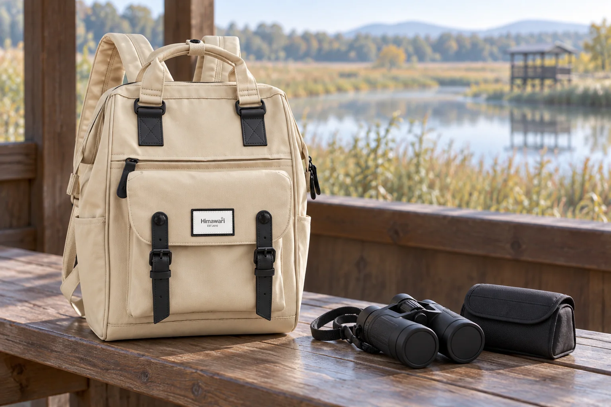

탐조 산책의 백팩: 쌍안경 덮개와 끈을 함께 챙기기

물가를 걷다가 새를 발견하면 쌍안경부터 꺼내고 싶어집니다. 잠깐 내려놓은 렌즈 덮개와 풀린 목끈은 그다음에야 눈에 들어옵니다. 출발 전 가방을 꾸릴 때 쌍안경 본체뿐 아니라 작은 덮개가 돌아올 자리도 함께 정해보세요.
덮개를 벗긴 뒤 둘 자리를 정합니다
쌍안경의 덮개가 본체나 끈에 연결되어 있는지 먼저 확인하세요. 분리되는 덮개라면 관찰하는 동안 넣어둘 케이스의 작은 공간을 정합니다. 벤치 위나 겉옷 주머니에 각각 두면 다시 이동할 때 빠뜨리기 쉽습니다. 연결 방식은 기기마다 다르므로 임의로 끈을 묶기보다 본체의 사용 안내를 따릅니다.
목끈이 여밈 사이에 끼지 않게 담습니다
쌍안경을 케이스에 넣고 남는 목끈을 함께 정리합니다. 끈이 지퍼 밖으로 길게 나오거나 케이스 여밈에 걸리지 않는지 살펴보세요. 백팩 안에서도 케이스 손잡이와 쌍안경 끈을 구분해두면 꺼낼 때 본체 대신 끈만 잡아당기는 일을 줄일 수 있습니다. 기기를 억지로 접거나 조절 다이얼을 누르며 자리를 만들지는 않습니다.
관찰을 마친 뒤에는 상태부터 봅니다
다시 이동하기 전에 멈춰서 쌍안경을 받치고, 덮개와 케이스를 차례로 확인하세요. 물가에서 표면에 이슬이나 물기가 묻었다면 사용한 기기의 관리 안내에 맞게 처리한 후 보관합니다. Nikon의 쌍안경 관리 안내도 방수 모델을 포함해 물기를 닦고 건조한 뒤 보관하도록 설명합니다. 백팩 원단의 생활방수 표시가 쌍안경의 보호 성능을 대신하지는 않습니다.
No.9018 사진에서는 바깥 배치를 살펴보세요
No.9018 베이지블랙은 제조사 카탈로그 기준 외부 크기가 가로 28 × 세로 40 × 폭 17cm입니다. 손잡이 아래 검정 배색과 앞쪽 플랩 포켓은 실제 원본을 참조했습니다. 사진은 쌍안경과 케이스를 가방 옆에 둔 준비 장면이며 내부 수납을 시험한 모습은 아닙니다. 이미 가진 쌍안경은 덮개와 끈까지 담아 케이스를 닫은 상태로 실제 입구와 안쪽 공간을 확인하세요.
참고·안내
- Himawari No.9018 제품 정보
- 실제 Himawari No.9018 베이지블랙 원본을 참조한 AI 연출 사진입니다. 쌍안경과 케이스는 별도 소품이며 제품에 포함되지 않습니다.
자주 묻는 질문
쌍안경을 앞주머니에 바로 넣어도 되나요?
주머니 크기만 보고 판단하지 말고 기기와 케이스의 사용 안내를 확인하세요. 사진 속 No.9018에 해당 쌍안경을 넣어 시험한 것은 아닙니다.
분리되는 렌즈 덮개는 어디에 두면 좋을까요?
관찰 중 넣어둘 케이스 공간을 정하고, 이동 전 본체와 덮개의 개수를 함께 확인해보세요.